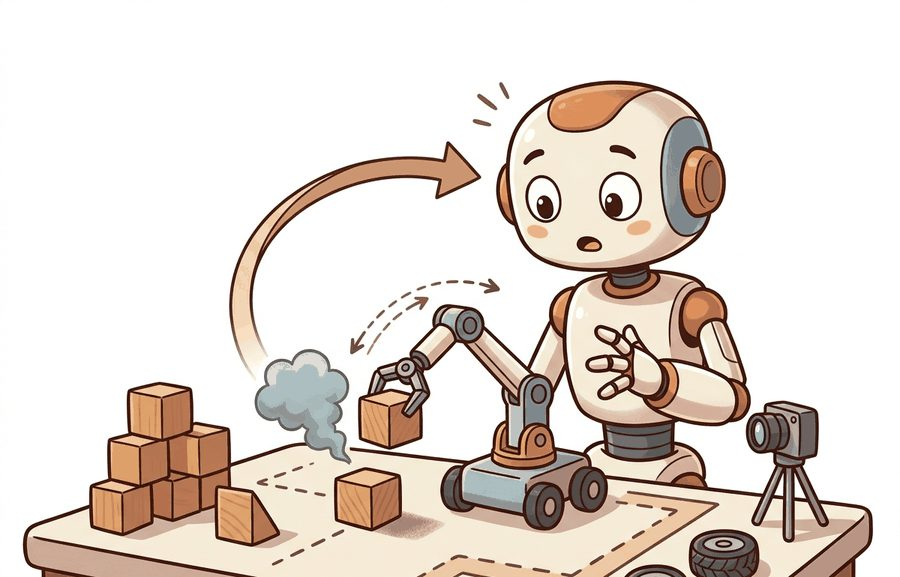
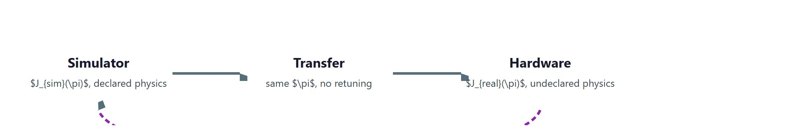
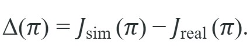

"Simulation gives you replay. Hardware tells you which assumptions survived contact."
Section 1.4

This section uses the task functional $J(\pi)$ introduced in section 1.1 and the agent-environment loop from section 1.3; review those before continuing if either feels unfamiliar. The reality gap and domain randomization introduced here are developed in full in section 13.2 (domain randomization algorithms and curriculum strategies), section 20.3 (sim-to-real transfer for manipulation), and section 43.1 (large-scale transfer in locomotion). The neural-scene and world-model approaches mentioned at the end of this section are treated in section 28.6 and section 39.1 respectively.
By the end of this section you will be able to define the reality gap as a measurable quantity, name the three fidelity dimensions a transfer claim depends on, and choose between system identification and domain randomization to close it. A simulator and a robot run the same policy, but they are not the same instrument. Simulation is a world with declared equations: it gives wall-clock speed, massive parallelism, perfect resets, ground-truth state, safety, and failures that cost nothing. Hardware is a world with undeclared physics: contact, friction, compliance, sensor noise, latency, actuation limits, calibration drift, and wear. The distance between a policy's behavior in those two worlds is the reality gap, and it is a measurable quantity, not a disclaimer. Almost every deployment decision in this book reduces to one question: which conclusions does the cheap world support, and how large is the gap to the expensive one. Figure 1.4 traces this at a glance: one policy scored in two worlds, with the reality gap as the return path between them.

A walking policy can clear ten thousand simulated obstacles flawlessly and then snap a real robot's ankle on the first physical step, and the entire reason fits in one equation. Treat the simulator and the robot as two transition processes that share an action space. The simulator advances state by a declared model $T_{\text{sim}}(s' \mid s, a)$: equations the modeler wrote down for rigid-body dynamics, a contact solver, a friction law, and a sensor model. The physical robot advances by $T_{\text{real}}(s' \mid s, a)$, which no one ever wrote down in full. The same policy $\pi$ induces a trajectory distribution in each. It therefore yields two values of the task functional $J(\pi)$ from Section 1.1. Figure 1.4A illustrates this with a real robot accumulating wear and latency beside its faster-than-real-time simulated twin. The reality gap is their difference,

This is the central object of the section. It is positive when a policy looks better in simulation than on hardware, which is the usual case, and it is measured in the units of $J$ (success rate, return, completion time), not asserted as a caveat. A sim-to-real method is good exactly to the extent that it makes $\Delta(\pi)$ small for the policies you actually deploy, and the honest way to report transfer is to give $J_{\text{sim}}$, $J_{\text{real}}$, and $\Delta$ together, computed on the same policy and the same task definition.
The reality gap is a measured number in the units of $J$, not a caveat: report $J_{\text{sim}}$, $J_{\text{real}}$, and $\Delta$ together on one policy and one task.
Before reading on, ask yourself: if a policy scores 94% in simulation, what is your best guess for its success rate on the physical robot? Keep that number in mind as you work through the rest of this section.
A policy that succeeds only in simulation has not solved the task; it has solved the simulator.
Simulation is attractive for reasons that are concrete and quantifiable. It runs faster than wall-clock time, often by orders of magnitude, and it runs thousands of environments in parallel on a GPU, so a learning run that would take physical years finishes in hours. A locomotion policy that requires roughly 50,000 physical rollouts to converge when trained on a single real robot typically needs only 300 rollouts worth of hardware time when the same compute runs in 4,096 parallel simulated environments; the robot is no longer the bottleneck, the policy is. It offers perfect resets: every episode can start from an identical state, which makes counterfactual experiments (change one variable, hold the rest) possible in a way hardware never allows. It exposes ground-truth state (exact poses, contact forces, object masses) that on a robot must be estimated and is partly unobservable. And its failures are free: a simulated robot can fall ten thousand times with no broken gearbox and no safety incident, because simulation offers physics without consequences.
What it does not give for free is agreement with the physical world. The divergence has named sources, and they map onto three core fidelity dimensions worth keeping separate (a fourth, timing, is named just below):
A fourth dimension, temporal fidelity (whether the simulator's control timing, including sensor and actuation delay, matches the robot's), is named here for completeness because the comparison table later in this section scores all four dimensions; it gets its own callout right after that table appears.
Think of behavioral fidelity like a recipe tested at sea level and then cooked at high altitude. The ingredients are identical, the oven looks the same, the cook follows every step correctly, yet the cake falls flat because water boils at a lower temperature and the batter sets before it rises. The kitchen passed every visual and physical inspection, but the outcome diverged because one hidden variable (air pressure) changed how the underlying process unfolded. A simulator with perfect geometry and plausible textures can fail behavioral fidelity the same way: the agent reads the right inputs and executes the right action, but the physics underneath responds differently, so the decision that was correct in the simulator becomes the wrong decision on hardware.
These trade against speed. A high-fidelity contact solver with fine time steps and a path-traced renderer is slower per step, which shrinks the parallelism that made simulation attractive in the first place. The speed-fidelity tradeoff is the practitioner's core dial: you buy fidelity with compute, and past some point the marginal fidelity does not change which policy you would deploy, so paying for it is waste.
The speed-fidelity tradeoff is really just the classic "you can have it fast, cheap, or accurate: pick two" in a physics-engine costume. Cranking up contact solver resolution until your simulation runs slower than the actual robot is perhaps the most committed form of missing the point.
There is no globally "high-fidelity" simulator. Fidelity is defined against a task and a claim. A friction model good enough to learn a walking gait may be useless for a precision insertion that lives or dies on micron-scale contact. Always state fidelity as "sufficient for claim X," and let the claim, not the screenshot, decide how much physics and rendering you actually need.
Once you accept that fidelity is only ever "sufficient for claim X," the practical question becomes how to shrink the gap that remains. Two strategies dominate, and they pull in opposite directions. System identification narrows the simulator onto the specific robot: measure masses, friction coefficients, motor constants, and latencies, then fit $T_{\text{sim}}$ to match logged hardware rollouts. Fitting the model accurately shrinks $\Delta$. The limit is scope: you can only identify parameters you thought to measure, and residual unmodeled physics bites on deployment. Domain randomization takes the opposite bet. Rather than match one robot, it samples uncertain parameters (friction, mass, latency, lighting, textures) over a wide range during training. The policy must be robust to all of them. It then treats the real world as just one more sample from the training distribution. This trades peak in-distribution performance for transfer that requires no accurate model. In practice the two strategies combine: identify what you can measure, randomize over what you cannot. Chapter 13 develops simulation and the physics engines; Chapters 20 and 43 develop domain randomization and sim-to-real transfer in depth.
Who: Senior robotics engineer at a 12-person warehouse-logistics startup building autonomous pallet movers.
Situation: The team trained a MuJoCo-based pushing policy that scored 94% success in simulation but only 61% on the physical robot, a reality gap of Delta = 0.33 driven almost entirely by floor-friction variation across concrete, epoxy coating, and loading-dock rubber mats.
Problem: The system-identification pass had measured friction at three floor locations; it could not cover the full distribution of surfaces encountered across the 40,000 sq ft facility.
Dilemma: One option was to install a force-torque sensor on the forks to measure friction in real time and close the loop with adaptive control, estimated at six weeks of integration work and $800 per unit. The other option was to apply domain randomization in MuJoCo, sampling the friction coefficient uniformly over [0.25, 0.85] across training episodes, accepting some drop in peak performance to gain coverage, at roughly three days of experiment iteration.
Decision: The team chose domain randomization, reasoning that the behavioral fidelity gap (the policy making wrong braking decisions) mattered more than the sensor-measurement gap, and that a robust policy would generalize without per-unit hardware changes.
How: They added a MuJoCo XML randomization wrapper using dm_control's Physics.reload_from_xml_string to resample floor friction each episode, running 2,048 parallel environments on an RTX 3090 with MuJoCo MJX for roughly 4 hours of training per sweep.
Result: Hardware success rate rose from 61% to 89%, closing the reality gap from Delta = 0.33 to Delta = 0.05, with no sensor additions and no per-robot calibration step.
Lesson: When the gap lives in a parameter you cannot measure exhaustively, randomizing over its plausible range beats identifying a single point estimate, and the speed advantage of simulation makes that sweep nearly free.
Input: policy $\pi$, task definition with reward $r$, simulator $T_{\text{sim}}$, physical robot $T_{\text{real}}$, fidelity budget (compute hours), deployment threshold $\theta_{\text{deploy}}$
Output: deployment decision $d \in \{\text{deploy}, \text{randomize}, \text{identify}, \text{abort}\}$, reality gap estimate $\hat{\Delta}$
The checklist above stays abstract until you watch $\Delta$ appear in a system small enough to hold in your head, so here is one. The code below is the smallest honest demonstration of $\Delta$. A 1D braking controller must stop a sliding mass before a wall, planning its braking distance from an assumed friction coefficient (the value it was tuned on, $\mu = 0.8$). We then run the identical controller, no retuning, on hardware-like surfaces where the true friction is lower. Correct in its own world and crashing in the other, it lets us read off the reality gap as the drop in success rate.
# Reality gap for a 1D braking controller tuned to one friction coefficient.
# Same policy, two worlds: it succeeds where mu matches and overshoots where mu drops.
import numpy as np
def overshoot(mu_true, mu_assumed, v0=4.0, dt=0.005, g=9.81, margin=0.30):
# The controller knows the wall position and plans its braking distance from
# its ASSUMED friction. It must stop on or before the wall (overshoot <= 0).
planned_stop = v0**2 / (2.0 * mu_assumed * g)
wall = planned_stop + margin
brake_point = wall - planned_stop - v0 * dt # one-step lead removes integration bias
x, v = 0.0, v0
while v > 1e-4:
decel = mu_true * g if x >= brake_point else 0.0
v = max(0.0, v - decel * dt)
x += v * dt
return x - wall # > 0 means it crossed the wall (a crash)
mu_nominal = 0.8 # the value the controller was tuned on
print(f"{'true mu':>8} {'overshoot (m)':>14} {'outcome':>8}")
for mu_true in (0.8, 0.6, 0.4, 0.3):
ov = overshoot(mu_true, mu_assumed=mu_nominal)
print(f"{mu_true:>8.2f} {ov:>14.3f} {'ok' if ov <= 0 else 'CRASH':>8}")
# Reality gap as a scalar: success at the tuned value vs. over a realistic friction band.
succeeds = lambda mu: overshoot(mu, mu_nominal) <= 0
J_sim = float(np.mean([succeeds(0.8) for _ in range(50)])) # eval where it was tuned
J_real = float(np.mean([succeeds(mu) for mu in np.linspace(0.3, 0.8, 50)])) # eval over the real band
print(f"\nJ_sim (mu fixed at 0.80) = {J_sim:.2f}")
print(f"J_real (mu in [0.30,0.80]) = {J_real:.2f}")
print(f"reality gap Delta = {J_sim - J_real:.2f}")Trace the braking controller from Code 1.4.1 with concrete numbers, no code. The controller was tuned at $\mu_{\text{assumed}} = 0.8$ with $v_0 = 4.0$ m/s and $g = 9.81$.
1. Plan the stop (in simulation). Planned braking distance is $v_0^2 / (2 \mu_{\text{assumed}} g) = 16 / (2 \cdot 0.8 \cdot 9.81) = 16 / 15.70 = 1.019$ m. With a 0.30 m margin the wall sits at $1.019 + 0.30 = 1.319$ m, and the controller starts braking at the point $1.319 - 1.019 = 0.300$ m.
2. Run where the model is right ($\mu_{\text{true}} = 0.8$). Actual stopping distance from the brake point is also $16 / 15.70 = 1.019$ m, so it halts at $0.300 + 1.019 = 1.319$ m, exactly the wall. Overshoot $\approx -0.010$ m (one-step lead). Outcome: ok. This is $J_{\text{sim}}$.
3. Run where the model is wrong ($\mu_{\text{true}} = 0.4$). Same brake point at 0.300 m, but real stopping distance is now $16 / (2 \cdot 0.4 \cdot 9.81) = 16 / 7.85 = 2.038$ m. It halts at $0.300 + 2.038 = 2.338$ m, which is $2.338 - 1.319 = 1.019$ m past the wall. Overshoot $\approx +1.009$ m. Outcome: CRASH.
4. Read off the gap. Halving friction doubles the stopping distance, so a brake point computed for $\mu = 0.8$ runs about a meter long at $\mu = 0.4$. Averaging success over $\mu \in [0.3, 0.8]$ gives $J_{\text{real}} \approx 0.02$ against $J_{\text{sim}} = 1.00$, hence $\Delta = J_{\text{sim}} - J_{\text{real}} = 0.98$. The single tuned point looked perfect; the gap was hiding in one unmodeled parameter.
MuJoCo (open-source, maintained by Google DeepMind) is the reference for accurate contact dynamics with explicit bodies, joints, actuators, and sensor traces; reach for it when the suspected gap is contact, friction, or controller stability. MuJoCo MJX (MuJoCo XLA) is its GPU and TPU (Tensor Processing Unit) backend, and the newer MuJoCo Warp (a 2025 DeepMind and NVIDIA collaboration) pushes per-step throughput on RTX-class GPUs by one to two orders of magnitude, making large-scale domain randomization tractable on a single workstation. NVIDIA Isaac Lab runs thousands of parallel environments (tens of thousands of frames per second) for manipulation and locomotion policy learning, and as of 2025 it is moving toward multiple physics backends through Newton (an open-source physics engine project, unrelated to the SI force unit), including MuJoCo Warp. Use MJX or MuJoCo Playground when contact accuracy is the constraint; use Isaac Lab when robustness must be measured across many appearances, placements, and physical parameters at once (Chapter 13).
The table separates the four fidelity dimensions (the three named above plus temporal) and states, for each, what a simulator typically gets right, where the gap usually opens, and which gap-closing strategy applies. It is a planning aid: locate the claim you want to make in the left column and read across.
| Fidelity dimension | What simulation gets right | Where the gap opens | Primary gap-closing strategy |
|---|---|---|---|
| Physical (dynamics) | Free-flight motion, gross kinematics, rigid-body inertia, energy bookkeeping | Contact, friction, compliance, backlash, actuator latency and torque limits | System identification of measured parameters; randomize the rest |
| Visual (appearance) | Geometry, occlusion, camera intrinsics and viewpoint | Lighting, materials, reflections, sensor noise, motion blur, the render-vs-photo gap | Domain randomization of textures and lighting; real2sim scene capture |
| Behavioral (decisions) | Logic, planning, high-level task sequencing, discrete mode switches | Same-action, different-outcome divergence under unmodeled physics or perception | Closed-loop hardware panels that target the failure labels, not demos |
| Temporal (timing) | Nominal control rate and episode horizon | Sensor and actuation latency, jitter, dropped frames, clock skew | Inject measured delay distributions into the simulator |
Temporal fidelity is the most frequently skipped row in the table above. MuJoCo MJX and Isaac Lab both default to zero-latency control, meaning the action computed at step t takes effect at step t, whereas real motor drivers typically introduce a 1 to 3 control-cycle delay. Add this delay explicitly by buffering actions in a collections.deque(maxlen=n_delay) and applying the oldest entry each step; even a single-step delay (about 5 ms at 200 Hz) can be enough to destabilize a stiff locomotion policy on hardware, particularly at high control gains. Measure your robot's actual round-trip command latency with a logic analyzer or timestamped joint-encoder logs before you set this parameter, not after your first hardware crash.
The most expensive mistake in this area is reporting a simulated success rate as if it were a statement about the robot. A policy can reach high $J_{\text{sim}}$ by exploiting simulator artifacts: a too-soft contact model that forgives bad grasps, an idealized sensor with no noise, a solver that lets a gripper interpenetrate an object and "hold" it by a bug. The policy has then overfit the simulator, not learned the task, and $\Delta$ is large and hidden. Never publish or ship a simulated number without at least one closed-loop hardware rollout on the same policy, and report $\Delta$ explicitly. A sim result with no paired real result is a hypothesis, not a capability.
Three active directions are reshaping how the reality gap is measured and closed.
Differentiable simulation for gap-aware training (2024-2025). Rather than treating the simulator as a black box to randomize over, differentiable physics engines expose gradients through contact and friction, letting a policy directly minimize $\Delta$ during training. Google DeepMind's MuJoCo Warp (2025) and the Dojo differentiable simulator (Howell et al., 2022, now extended by multiple groups through 2024-2025) make this tractable at scale. The open question is how to regularize these gradients so the policy does not overfit a particular differentiable approximation and widen the real gap it was supposed to close.
Video world models as zero-hardware simulators (2024-2025). Large video-prediction models trained on internet-scale data and robot footage now generate plausible rollouts without any hand-written physics. Google DeepMind's Genie 2 (2024) and UniSim (Yang et al., 2024) demonstrate that a generative model can act as an environment for policy evaluation and light-weight fine-tuning, making the reality gap a model-vs-world gap rather than a physics-vs-world gap. Whether these models hallucinate dynamics that never occur in hardware, and how to detect that hallucination, remains open.
Gaussian-Splat-to-physics scene pipelines (2024-2025). 3D Gaussian Splatting reconstructions, first extended to dynamic scenes in 2024 (e.g., PhysGaussian, Xie et al., 2024, and follow-on work at Stanford and CMU), now feed directly into rigid-body and deformable-object simulators. The resulting "scan-to-sim" pipeline collapses the visual half of the reality gap by making the simulator's environment a reconstruction of the actual deployment site. The open problem for a PhD student: neither Gaussian splatting nor mesh extraction preserves contact geometry reliably at fine scale, so grasp-level tasks still fail at the visual-to-physical handoff; developing a representation that is simultaneously renderable and contact-simulatable at sub-millimeter resolution is unsolved.
So far: three frontier directions attack the reality gap from different angles: differentiable simulators make $\Delta$ itself a training signal, video world models replace hand-written physics with learned rollouts, and Gaussian-splat pipelines close the visual half of the gap by reconstructing the real deployment site; each still leaves an open problem rather than a finished solution.
Simulation and hardware run the same policy in different worlds, and the difference between them, $\Delta(\pi) = J_{\text{sim}}(\pi) - J_{\text{real}}(\pi)$, is a number you measure, not a hedge you write. Earn the speed and safety of simulation honestly by stating which fidelity dimension a claim depends on, closing the gap with system identification and domain randomization, and pairing every simulated metric with a hardware rollout on the same policy.
1. Reality-gap visualizer with Gymnasium (beginner, weekend). Build a CartPole or MountainCar agent in Gymnasium, tune it to a fixed physics parameter (pole mass or gravity), then sweep that parameter at evaluation time and plot J_sim vs. J_real as a function of the mismatch. The key challenge is writing the evaluation harness that holds the policy fixed while varying only the environment parameter, which forces you to separate policy code from environment configuration cleanly.
2. Domain-randomized pushing policy with MuJoCo and LeRobot (intermediate, 1-2 weeks). Implement a planar object-pushing task in MuJoCo, train a policy with domain randomization over floor friction and object mass using LeRobot's training loop, then evaluate the same checkpoint under fixed parameters and under the randomized distribution and report the reality gap Delta for both. The key challenge is wiring MuJoCo's XML parameter resampling into LeRobot's episode-reset callback so friction and mass change each episode without reloading the full model from disk.
Turn Code 1.4.1 into a domain-randomization study. Instead of one assumed friction, give the controller a braking point computed for the worst-case friction in a training band $[\mu_{\min}, 0.8]$. Sweep $\mu_{\min}$ from 0.8 down to 0.3, recompute $J_{\text{real}}$ over $[0.3, 0.8]$, and plot the reality gap $\Delta$ against $\mu_{\min}$. At what training band does $\Delta$ collapse, and what does the policy give up in best-case stopping distance to get there?
Pick a robot task you know and write its reality-gap budget on one page: list the three fidelity dimensions, name the single most likely gap source in each, classify each as "identify" (you can measure it) or "randomize" (you cannot), and state the one hardware failure label that would tell you the simulator was lying. Which dimension carries the most risk for your task, and is your current simulator spending its compute there?
Goal: Observe and quantify $\Delta(\pi)$ on a real RL agent by holding a trained policy fixed while perturbing the environment physics it was never tuned for. Budget 20 to 30 minutes.
Tools: Python with gymnasium and stable-baselines3 (pip install gymnasium stable-baselines3). No GPU needed; CartPole trains on CPU in a couple of minutes.
Steps: (1) Train a PPO agent on CartPole-v1 with default physics for about 100k steps; this is your "simulator" policy. (2) Evaluate it over 100 episodes with the default pole length (env.unwrapped.length = 0.5) and record the mean return as $J_{\text{sim}}$. (3) Without retraining, set env.unwrapped.length to a swept range of values (for example 0.3, 0.4, 0.5, 0.6, 0.7, 0.8) and re-evaluate the same frozen policy 100 episodes at each, recording mean return as $J_{\text{real}}(\text{length})$.
What to vary: the pole length (the unmodeled "hardware" parameter); optionally also masscart or gravity for a second pass.
What to observe: plot return against pole length. The peak sits at the trained value (0.5) and drops on either side; the depth of that drop is $\Delta$. Then retrain a second agent with domain randomization (resample length uniformly in [0.3, 0.8] each episode reset) and overlay its curve. You should see a flatter, more robust curve that sacrifices a little peak return for a much smaller gap, the same identification-vs-randomization tradeoff from Code 1.4.1, now on a learned policy.
Section 1.5 explains why the 2023 to 2026 Physical AI framing changed the field's center of gravity.
Mittal, M. et al. "Orbit / Isaac Lab: A Unified Simulation Framework for Interactive Robot Learning Environments." IEEE RA-L (2023). https://arxiv.org/abs/2301.04195
The framework behind NVIDIA Isaac Lab and its GPU-parallel environments for large-scale manipulation and locomotion learning and randomization.
Zhao, W., Queralta, J. P., and Westerlund, T. "Sim-to-Real Transfer in Deep Reinforcement Learning for Robotics: A Survey." IEEE SSCI (2020). https://arxiv.org/abs/2009.13303
A survey of the reality-gap problem and the system-identification, domain-randomization, and real2sim strategies that close it.
Tobin, J., Fong, R., Ray, A., Schneider, J., Zaremba, W., and Abbeel, P. "Domain Randomization for Transferring Deep Neural Networks from Simulation to the Real World." IROS (2017). https://arxiv.org/abs/1703.06907
The domain-randomization paper. Trains on a wide distribution of simulated appearances so the real world reads as one more sample, the strategy used to collapse $\Delta$ in Exercise 1.4.1.
Todorov, E., Erez, T., and Tassa, Y. "MuJoCo: A Physics Engine for Model-Based Control." IROS (2012). https://ieeexplore.ieee.org/document/6386109
The original MuJoCo paper, defining the contact and constraint solver that underlies the physical-fidelity dimension and the MJX and Warp backends discussed in the library shortcut.